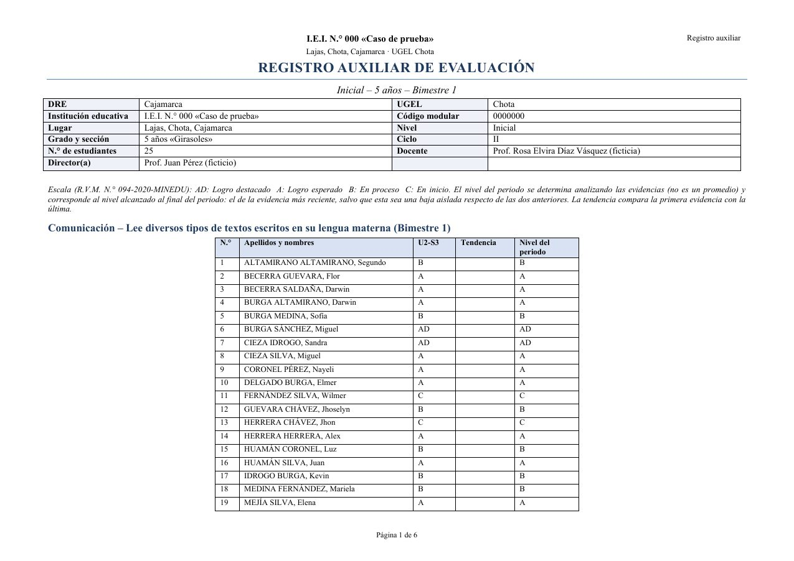
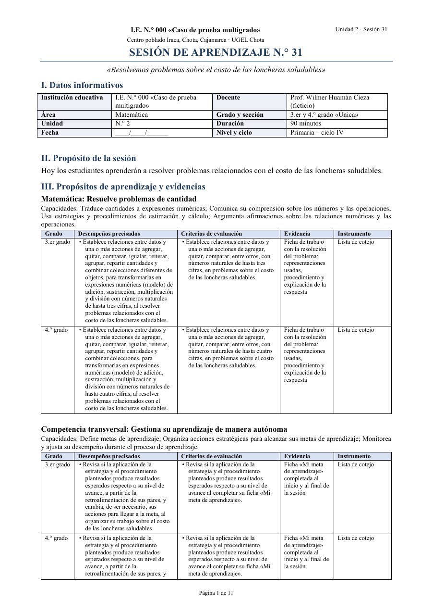
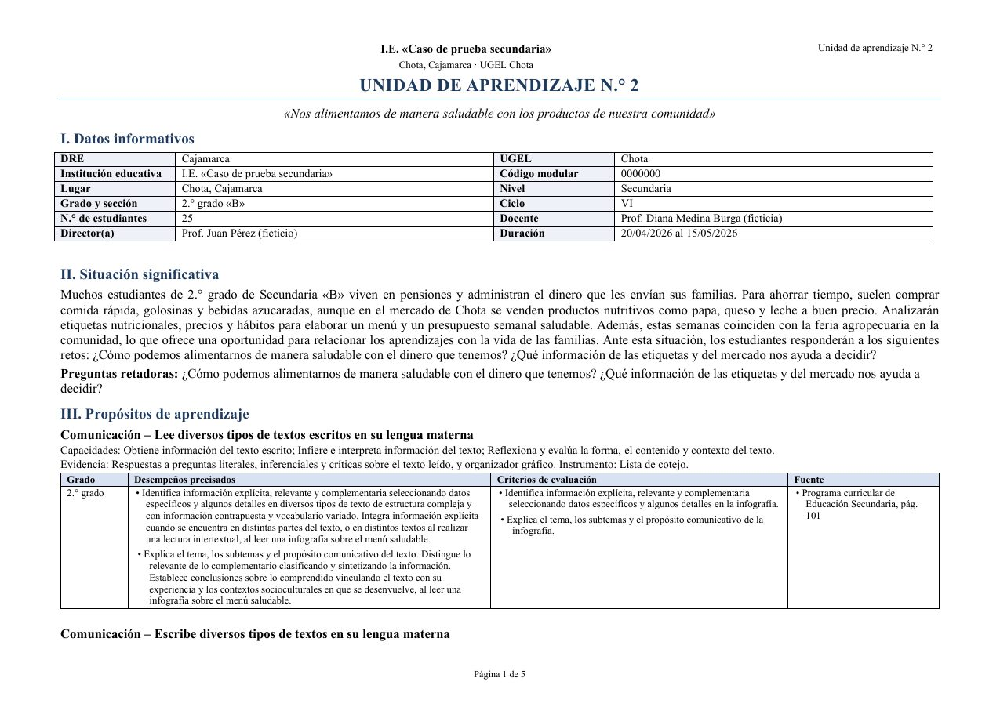
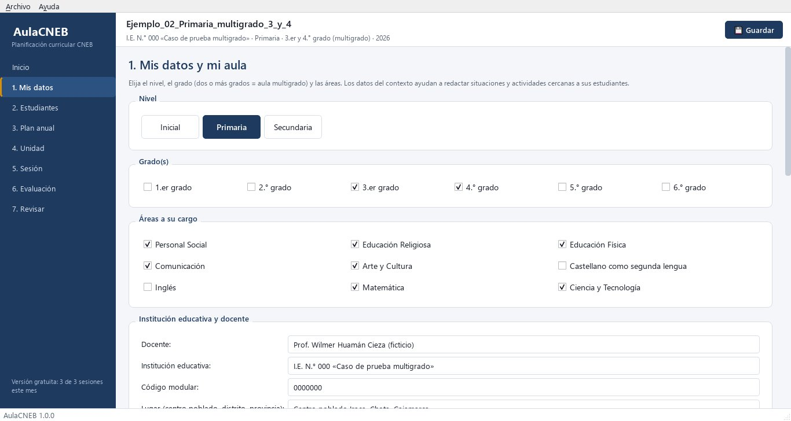
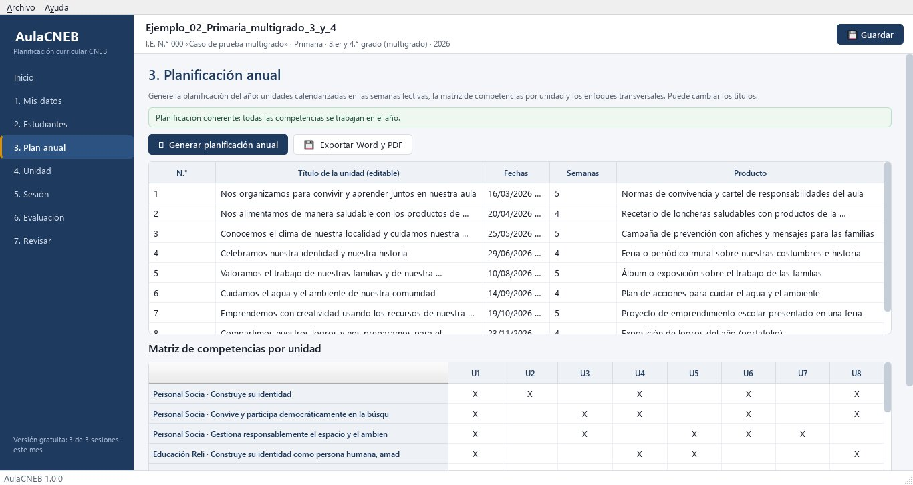
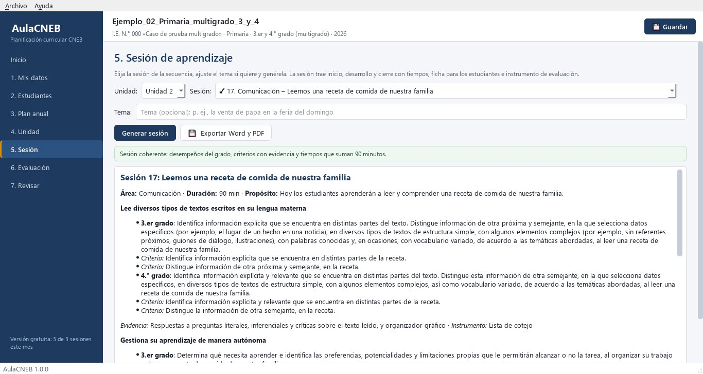
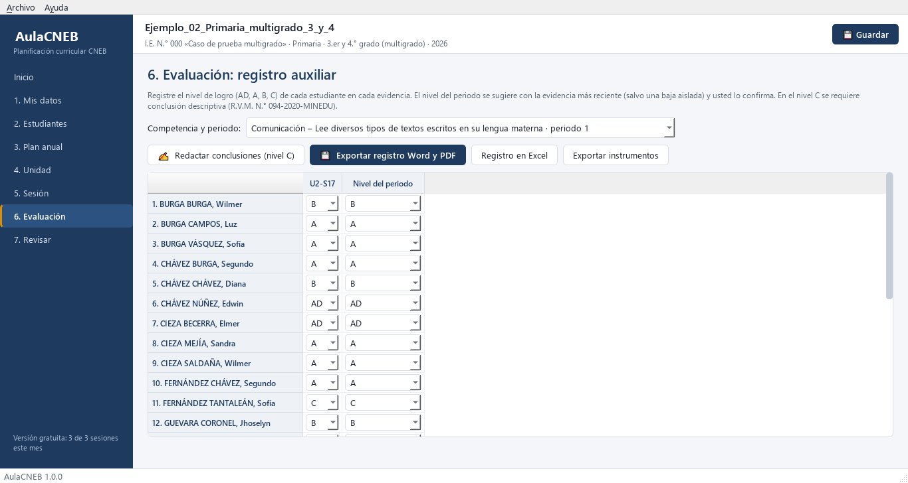

S/ 0para siempre
Sin tarjeta y sin registro
3 sesiones al mes
- Planificación anual, unidades, instrumentos y registro sin límite
- 3 sesiones de aprendizaje cada mes
- Word editable y PDF
- Todas las funciones del programa
InicioAulaCNEB
AulaCNEB · para docentes de EBR
Planificación anual, unidades, sesiones, instrumentos de evaluación y registro auxiliar según el Currículo Nacional, con las competencias y los desempeños oficiales de tu grado y situaciones pensadas para tu comunidad.
Gratis, con 3 sesiones al mes. Licencia anual de S/ 99 para sesiones sin límite.
Para Windows 10 y 11 · funciona sin internet · Tu primera sesión en 5 minutos (PDF)



Qué prepara
Eliges nivel, grado y áreas, escribes los datos de tu institución y de tu comunidad, y AulaCNEB arma los documentos del año. Todo sale en Word para que lo ajustes y en PDF listo para imprimir o entregar.
Las unidades del año en las semanas lectivas, por bimestre o trimestre.
Situación significativa con preguntas retadoras y el producto de la unidad.
Inicio, desarrollo y cierre con tiempos que suman la duración de la sesión.
Lista de cotejo, escala de valoración o rúbrica con los criterios de cada sesión.
Niveles AD, A, B y C por competencia, como pide la R.V.M. N.° 094-2020-MINEDU.
El programa revisa la coherencia de todo lo que vas a presentar.
Documentos de ejemplo
Hechos con AulaCNEB para instituciones y estudiantes ficticios, sin cambiar nada a mano. Times New Roman, con el encabezado de tu institución y tu logo.
Cómo funciona
Un asistente te lleva de tus datos a los documentos. Puedes volver a cualquier paso y corregir títulos, situaciones o productos.




Nivel, grado (dos grados = multigrado), áreas, institución y contexto: zona, EIB, actividades productivas, fiestas y problemática. Importa la nómina del SIAGIE o escribe los nombres.
Generas la planificación anual, luego cada unidad y cada sesión. Sin internet y sin inteligencia artificial, con las plantillas del programa; o con IA, si la activas.
Registras los niveles de logro, revisas la coherencia y exportas todo a Word y PDF con nombres claros, por ejemplo «3B_Comunicacion_Sesion05».
Datos oficiales
Las áreas, competencias, capacidades, estándares y desempeños por grado salen de una base construida con los documentos oficiales. Cada dato guarda su documento y su página, para que puedas comprobarlo.
La inteligencia artificial no inventa el currículo. Si la activas, solo redacta lo creativo (situaciones, actividades, fichas y conclusiones) y elige entre los desempeños que le entrega el programa. Si nombra una competencia o un desempeño que no está en la base oficial, el programa la rechaza y usa sus plantillas.
Precios de lanzamiento
La versión gratuita no vence. La licencia quita el límite de sesiones. Pagas con Yape o transferencia al BCP.
Sin tarjeta y sin registro
3 sesiones al mes
Equivale a S/ 8.25 al mes
Precio de lanzamiento
S/ 79 por docente
10 licencias anuales
Próximamente: IA incluida. La redacción con inteligencia artificial sin configurar nada ni tener una clave propia. Hoy puedes usar la IA con tu propia clave de Anthropic o trabajar sin IA, con las plantillas.
AvísamePrecios de lanzamiento en soles. La licencia es por computadora: abre Ayuda → Licencia, copia el ID de tu equipo y envíalo por WhatsApp (+51 907 417 379) con el comprobante de pago; te mandamos la clave apenas se acredite el pago. Revisa la política de reembolso y los términos y condiciones.
Preguntas frecuentes
No. AulaCNEB funciona sin internet y la licencia se valida en tu computadora. Solo la inteligencia artificial, si la activas, usa internet.
Sí. Si marcas dos o más grados, el programa trabaja un mismo tema para todos, con los desempeños y los criterios de cada grado y actividades diferenciadas por grado.
Sí. Puedes corregir títulos, situaciones y productos en el programa, y todo se exporta en Word editable. La planificación es tuya: revísala y adáptala a tu aula antes de presentarla.
De los documentos oficiales del MINEDU: el CNEB y los programas curriculares de cada nivel. Cada dato guarda su documento y su página. En Secundaria, el documento oficial es un PDF escaneado: los pocos desempeños que no se pudieron leer con total certeza salen marcados para que los revises.
Para los documentos en Word, no. Para guardar el PDF, el programa usa Microsoft Word o, si no lo tienes, LibreOffice, que es gratuito.
La nómina se guarda solo en tu computadora, dentro de tu proyecto; no se envía a ALF_BIM. Si usas la IA, se envían a Anthropic los datos de la clase y de las evidencias, nunca los nombres ni el DNI de tus estudiantes.
La pagas directamente a Anthropic según tu uso: alrededor de US$ 0.04 por sesión con el modelo recomendado. Sin IA, el programa usa sus plantillas y no cuesta nada.
3 sesiones de aprendizaje cada mes, para siempre. La planificación anual, las unidades, los instrumentos y el registro auxiliar no tienen límite.
Abre Ayuda → Licencia en el programa, copia el ID de tu equipo y envíalo por WhatsApp con el comprobante de pago por Yape o transferencia al BCP. Te enviamos la clave apenas se acredite el pago.
Instalador para Windows 10 y 11 (64 bits). Al terminar se abre con tres proyectos de ejemplo: Inicial, Primaria multigrado y Secundaria. Empieza por la guía «Tu primera sesión en 5 minutos».
Versión 1.0.0 · 49 MB · SHA-256 6D099D801E7AAD2D78AEEAB726627D1408349FEE524D04D96E7CB92C001654E8
Si Windows muestra «Windows protegió su PC», pulsa «Más información» y luego «Ejecutar de todas formas».